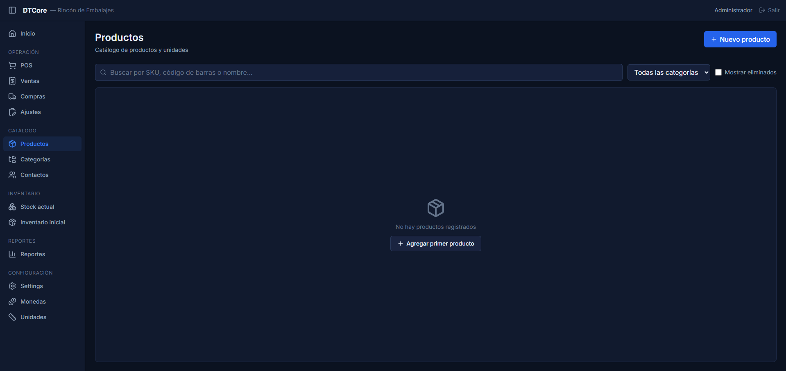
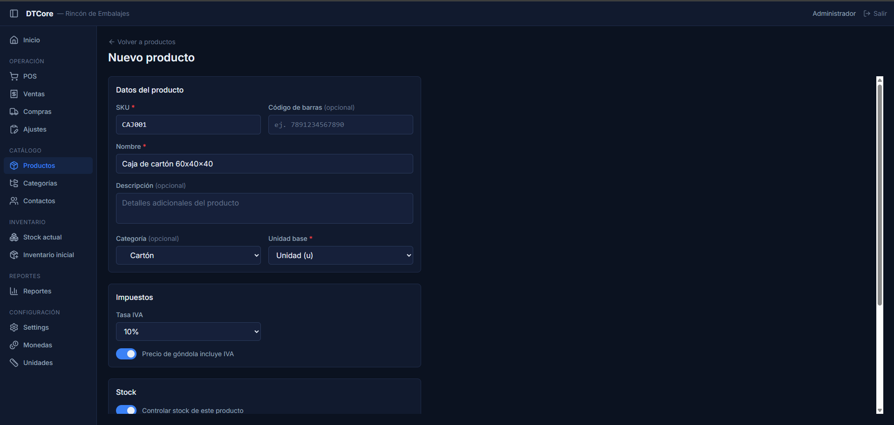
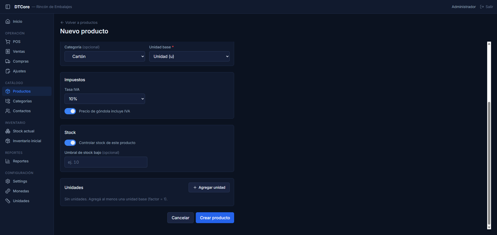
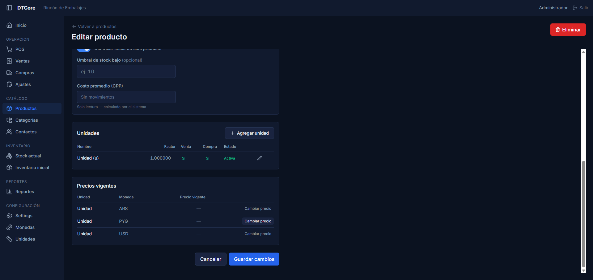

¿Para qué sirve?
El catálogo de Productos es donde registrás todo lo que vendés o comprás en tu negocio. Cada producto tiene su nombre, código, categoría, impuesto y las unidades en las que se vende o compra (por ejemplo: unidad, caja, docena). Los precios de venta también se configuran desde acá, una vez creado el producto.
Desde la lista de productos podés buscar por SKU, código de barras o nombre, y filtrar por categoría. Al hacer clic en cualquier fila, se abre el detalle del producto para editarlo.
Pasos
-
1
Ir a Productos y abrir el formulario
En el menú lateral, hacé clic en Productos. Aparece la lista de productos existentes. Para crear uno nuevo, hacé clic en el botón + Nuevo producto en la esquina superior derecha.
Si querés editar uno ya existente, hacé clic en cualquier fila de la tabla o en el ícono de lápiz de ese producto.

-
2
Completar los datos del producto
El formulario se divide en cuatro secciones: Datos del producto, Impuestos, Stock y Unidades. Los campos marcados con * son obligatorios.
Sección "Datos del producto":
- SKU * — Código interno del producto. Lo definís vos (ej: PROD-001, CJ-60x40). No puede repetirse entre productos activos.
- Código de barras (opcional) — El número del código de barras impreso en el producto, si tiene. Sirve para buscarlo rápido en el POS escaneando con una pistola.
- Nombre * — El nombre como aparece en pantalla y en los comprobantes (ej: Caja de cartón 60×40×40).
- Descripción (opcional) — Detalles adicionales para uso interno. No aparece en el POS.
- Categoría (opcional) — Agrupación del producto. Podés dejarlo sin categoría y asignarlo después.
- Unidad base * — La unidad mínima en que se cuenta el stock internamente (ej: Unidad, Kilogramo). Las demás unidades (caja, docena) se definen como múltiplos de esta. Ver Paso 4.

-
3
Configurar impuestos y control de stock
Sección "Impuestos":
- Tasa IVA — Las opciones son 0% — Exento, 5% o 10%. Por defecto viene en 10%. Consultá con tu contador si no estás seguro.
- Precio de góndola incluye IVA (switch azul) — Cuando está activado (posición ON), el precio que cargás en el sistema ya incluye el IVA. El sistema calcula el desglose automáticamente al vender. Dejalo activado salvo que tu contador te indique lo contrario.
Sección "Stock":
- Controlar stock de este producto (switch azul) — Activado por defecto. Desactivalo solo para servicios o productos que no requieren llevar inventario (ej: mano de obra, envío).
- Umbral de stock bajo (opcional) — Cantidad mínima antes de que el sistema te avise que el stock está bajo. Podés dejarlo vacío si no necesitás esta alerta.
⚠ Los impuestos se configuran por producto La tasa de IVA y el toggle de "incluye IVA" se aplican en cada venta que registres con ese producto. Si los cambiás después de haberlo vendido, las ventas anteriores no se modifican: conservan los valores que tenían al momento de la venta. -
4
Agregar unidades de medida
En la sección Unidades, hacé clic en Agregar unidad para añadir una unidad de venta o compra. Podés tener varias unidades para el mismo producto: por ejemplo, vender por unidad y comprar por caja.
El modal "Agregar unidad" tiene estos campos:
- Unidad — Seleccioná del catálogo (ej: Unidad (u), Caja (cj), Kilogramo (kg)). Si no existe la que necesitás, primero creála en Configuración → Unidades de medida.
- Factor (respecto a unidad base) — Cuántas unidades base equivale esta unidad. Si la unidad base es "Unidad" y estás agregando "Caja de 12", el factor es 12. Si la unidad es la misma que la base (factor 1), podés dejarlo en 1.
- Código de barras — Opcional. Si la caja tiene un código de barras distinto al de la unidad suelta, podés cargarlo acá.
- Unidad de venta por defecto — La unidad que aparece seleccionada por defecto en el POS al vender.
- Unidad de compra por defecto — La unidad que aparece por defecto al registrar una compra a proveedor.
Unidad Factor Default venta Default compra Unidad (u) 1 Sí — Caja (cj) 12 — Sí Ejemplo: se vende por unidad y se compra por caja de 12. El sistema convierte automáticamente al ingresar o egresar stock.
⚠ El factor no se puede cambiar si ya hay movimientos o precios Una vez que el producto tuvo compras, ventas o precios cargados para esa unidad, el campo Factor queda bloqueado. Si cometiste un error en el factor antes de operar, podés eliminar la unidad y volver a agregarla con el valor correcto.Hacé clic en Guardar unidad para confirmar. Podés agregar todas las unidades que necesites antes de guardar el producto.
-
5
Guardar el producto
Una vez completados los datos, hacé clic en Crear producto (en modo edición, el botón dice Guardar cambios). El sistema te lleva al detalle del producto recién creado.
Si falta algún campo obligatorio, el sistema resalta el campo en rojo con un mensaje de error debajo. Completalo y volvé a intentar.

-
6
Registrar el precio de venta
Los precios se cargan después de guardar el producto, en la sección Precios vigentes que aparece en el formulario de edición. La tabla muestra una fila por cada combinación de unidad activa × moneda activa.
Para cargar o actualizar un precio, hacé clic en Cambiar precio en la fila correspondiente. Se abre un modal con tres campos:
- Precio — El monto en la moneda indicada. Incluye IVA si activaste "Precio de góndola incluye IVA" en el paso anterior.
- Vigente desde — La fecha a partir de la cual rige este precio. Por defecto viene con la fecha de hoy.
- Notas (opcional) — Por ejemplo: "Ajuste por inflación de junio".
Hacé clic en Guardar precio. Los precios anteriores quedan guardados como historial; el sistema siempre usa el precio más reciente cuya fecha ya haya llegado.

⚠ Los precios no retroactúan Si guardás un precio con fecha de hoy, las ventas que ya se confirmaron antes de ese momento no cambian. El historial de ventas siempre refleja el precio que estaba vigente en el momento de la venta. -
7
Activar, desactivar o eliminar un producto
Para eliminar un producto, abrí su ficha y hacé clic en el botón rojo Eliminar en la esquina superior derecha. Se abre un modal de confirmación. Si confirmás, el producto queda marcado como Eliminado pero no desaparece definitivamente: podés recuperarlo desde la lista activando el filtro Mostrar eliminados y haciendo clic en el ícono de restaurar (flecha circular).
Para inactivar una unidad de medida específica sin eliminar el producto, abrí la ficha, buscá la unidad en la tabla de Unidades y usá el toggle (interruptor) que aparece en su fila. La unidad queda marcada como Inactiva y no aparece en el POS ni en los formularios de compra, pero los registros históricos que la usaron se conservan.
⚠ Un producto eliminado no se puede usar en nuevas operaciones Al eliminar un producto, no podrás seleccionarlo en ventas ni compras nuevas. Las ventas y compras anteriores donde se usó quedan intactas. Si lo eliminaste por error, restáuralo con el ícono de flecha circular en la lista.
Consejos / Errores comunes
- El SKU no puede repetirse entre productos activos Si intentás guardar con un SKU que ya existe, el sistema rechaza la operación. Elegí un código diferente o verificá si el producto ya estaba creado buscándolo en la lista. Si era un producto eliminado, podés restaurarlo en lugar de crear uno nuevo.
- Creá el producto antes de cargar el precio La sección Precios vigentes solo aparece una vez que el producto está guardado. Si no ves la tabla de precios, es porque el producto todavía está en modo creación. Guardalo primero con Crear producto y luego cargá el precio.
- Precio en "—" en la lista de productos Si la columna "Precio PYG" muestra un guion (—), significa que todavía no se cargó ningún precio en PYG para la unidad de venta por defecto. Abrí el producto y cargá el precio con Cambiar precio.
- Diferencia entre SKU y código de barras El SKU es el código que vos definís para identificar el producto en el sistema (código interno). El Código de barras es el número impreso en el producto por el fabricante (EAN, UPC). Si tu negocio ya tiene códigos propios, usá el SKU. Si usás pistola lectora con los códigos del fabricante, cargá el código de barras también.
- ¿Cuándo desactivar una unidad en vez de eliminarla? Si una unidad ya tuvo movimientos (ventas o compras), el ícono de tacho no aparece — el sistema la protege para conservar el historial. En ese caso, usá el toggle (interruptor) para inactivarla. Así no aparece en operaciones nuevas pero el historial queda intacto.
- No puedo restaurar un producto eliminado Si al restaurar aparece el mensaje No se puede restaurar, es porque otro producto activo ya tiene el mismo SKU o código de barras. El sistema te muestra un botón "Ver producto activo" para ir a ese producto y resolverlo antes de restaurar.
- Organizá bien el catálogo desde el inicio Usar SKUs consistentes (ej: categoría + número) y asignar categorías desde el principio facilita la búsqueda y los reportes. Un catálogo ordenado ahorra tiempo cuando el volumen de productos crece.